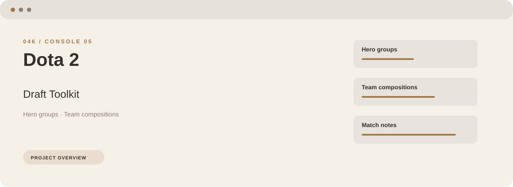

Start with hero groups, organize team compositions, and keep match notes close at hand. These are the main areas covered by Dota 2 Draft Toolkit.
Download Dota 2 Draft Toolkit
Open the project's download page for the application package and its installation information.